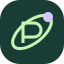
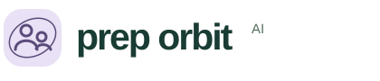

prep orbitAIThe Orbit P
A P for Prep, encircled by an orbit. The satellite dot represents a learner finding their place in a connected community.
Download SVG mark ↗Three original logo directions for a brand built around knowledge, connection, and community. Better Together is the primary identity used on the landing page.

prep orbitAIA P for Prep, encircled by an orbit. The satellite dot represents a learner finding their place in a connected community.
Download SVG mark ↗Two people within one orbit. A friendly, human-first direction for community programs and tutor recognition.
Download SVG mark ↗An open book beneath a guiding star. A clear symbol for understanding, possibility, and the joy of sharing knowledge.
Download SVG mark ↗